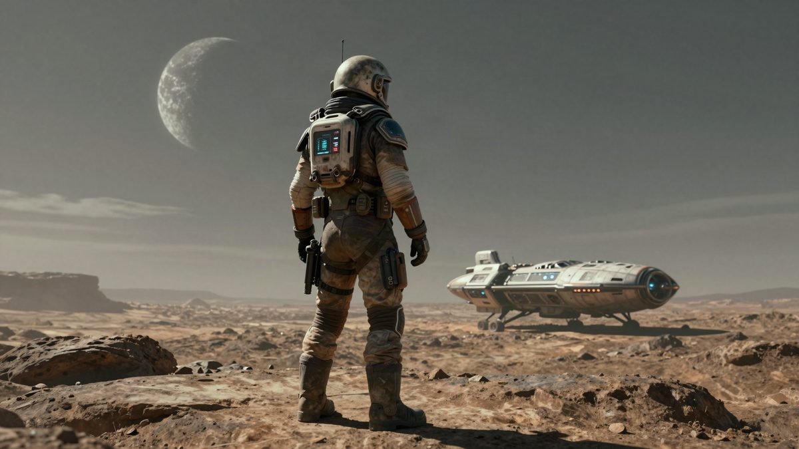

Intergalactic: The Heretic Prophet potpuno je igriv i u završnoj fazi produkcije

Neil Druckmann potvrdio je da je Intergalactic: The Heretic Prophet u završnim fazama produkcije i da se već može igrati, a Naughty Dog ga sada dorađuje i polira. Službenog datuma izlaska još nema, no 2027. se čini vjerojatnom godinom. Gameplay i više priče studio planira pokazati sljedeće godine.
Naughty Dog je Intergalactic: The Heretic Prophet doveo do faze u kojoj se može igrati, a tim se sada bavi doradom i poliranjem. To je u razgovoru s Pattonom Oswaltom rekao Neil Druckmann, a prenosi Kotaku. Službenog datuma izlaska još nema, no 2027. sve više izgleda kao vjerojatna godina.
Razgovor je bio dio livestreama Revenge Of TV 7. studenoga, a Druckmann je govorio i na Comic Creators Block Party 2026. O radnji igre nije htio ništa otkriti, osim što je potvrdio glumce koji su ionako već poznati. "Samo smo je teaserom najavili pa ne mogu puno govoriti, ali smo otprilike u završnim fazama produkcije, gdje je možemo igrati, dorađujemo je i poliramo, i jedva čekam da je pokažem svijetu", rekao je.
Intergalactic je znanstvenofantastična igra o lovcu na nagrade i prvi novi IP Naughty Doga nakon dužeg vremena. Studio ju je najavio krajem 2024., a otad je o njoj govorio vrlo malo. U kolovozu je objavljeno da je snimanje motion capturea završeno, a neslužbena izvješća kažu da su zaposlenici Naughty Doga ponovno u crunchu kako bi igra izašla 2027.
Što je najavljeno za iduću godinu
Druckmann je rekao da će studio sljedeće godine pokazati puno materijala. Obećao je gameplay i više priče, a vjeruje da će ljude iznenaditi ono što igra zapravo jest u odnosu na ono što misle da je. Prema njegovim riječima, igra ima vrlo veliku glumačku podjelu, ali studio želi da igrači tko sve glumi saznaju tijekom igranja, a ne iz ranijih najava.
Španjolski fan profil Intergalactica na X-u objavio je i izjavu koja se pripisuje Druckmannu, a koja igru opisuje kao kombinaciju franšiza Jak, Uncharted i The Last of Us. Citat nije potvrđen izvornom snimkom, pa ga treba uzeti s rezervom.
Kada izlazi
Do sada se činilo da studio sprema dugu promotivnu kampanju prije izlaska. Ako je igra već u poliranju, mogla bi izaći i u ožujku ili travnju 2027., a ne tek pred kraj godine. Kotaku ipak napominje da bi se razvoj zbog nekog većeg problema mogao produljiti za nekoliko mjeseci, pa je sve to zasad procjena, a ne najava.
Intergalactic: The Heretic Prophet ekskluziva je za PS5. Cijena i dostupnost u Europi zasad nisu objavljene.
Izvor: Kotaku